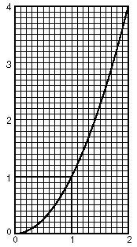

3. Plotting points on a computer or programmable calculator to find the
area under curves:I was browsing through a Scientific American
"Computer Recreations" article in which they were filling in squares
on a computer screen. I asked myself "Could I do that on our programmable
graphing calculator?" After a couple of hours of trying things and making
mistakes (I was never good at programming), I was able to plot points on the
screen to make a square. Hoorah! I plotted points as in the figure at left below
to make a 1x1 square. If you count the number of points,
this number will be a measure of the area of the square!
4. Finding the area under curves on graph paper
At this time I realized that not every youngster had a programmable, graphing
calculator. So I decided to use 1/10" graph paper to do the same thing.
First predict what part of the area of the 1x1 square at the right is under the curve y = x2. Graph the curve y = x2 carefully from x =0 to 2 (use 10 squares for 1 unit). Count the squares under the curve from 0 to 1, by approximating (carefully). Then count the the squares in the 1x1 square. Find the ratio of the no. of squares under the curve from 0 to 1, to the no. of squares in th 1x1 square. What simple fraction is close to this number?
Now count the squares under the curve from 0 to 2. Notice that the area surrounding the this part of the curve is not a square but a rectangle of 2*22 = 8 = 23. What fraction of this rectangle is under the curve?
5. The rectangle method (the standard textbook method) of finding the area under curves. - Not shown here.
6. Two problems. Two seemingly unrelated problems ended up with
similar interesting solutions!
Problem 1. The area under the parabola y = x2,
from 0 to 1.
Problem 2. The ratio of (the vol. of a square pyramid)/(the vol. of a
cube), with the same base.
- this is not done here.
7. The natural logarithm is the area under a curve and an infinite series.
Fill in the table below. Guess the log 1 (read as
the log of 1, and to base 10), first, and put your guess in the table in the
right-hand column, even though you probably don't know
what a log is! Then use a calculator to get the log 1, to 3 decimal
places- put that in the center column, under 'calculator answer'. Then guess
what the log 2 is. Put that number in the right-hand column. Use the clculator
to get the log 2 to 3 decimal places- put that under 'calculator answer'. Fill
in the rest of the table, and look for patterns as you go.
logs, to base 10 Calculator answer write guess, first